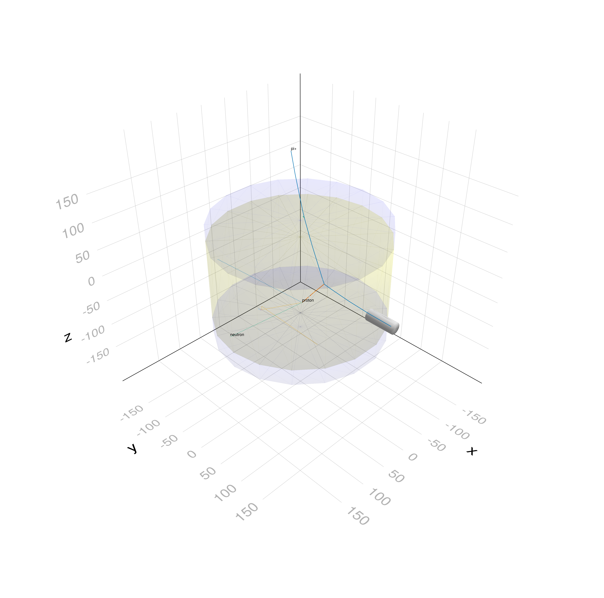

CERN Liquid Hydrogen Bubble Chamber
Example to simulate the CERN 30cm bubble chamber fill with liquid hydrogen and using a pion beam of 330 MeV from PS. The original device was like this:

You can also download this example as a Jupyter notebook and a plain Julia source file.
Table of contents
- Loading the necessary Julia modules
- Define the Detector
- Define the simulation data
- Define the user actions
- Define the primary particle generator
- Create Magnetic Field
- Create the Application
- Draw and trigger functions
- Configure and Initialize
- Draw detector and first event that triggers
Loading the necessary Julia modules
Geant4andGeant4.SystemOfUnitsfor the Geant4 simulationPrintfandGeometryBasicsto format the output and handle the geometry
using Geant4
using Geant4.SystemOfUnits
using Printf, GeometryBasics
using CairoMakie, Rotations, LinearAlgebra, IGLWrap_jll # to force loading G4Vis extensionDefine the Detector
The HBC30 is cylinder of 30cm filled with liquid hydrogen We include the HBC30Detector.jl file not to clutter the example.
include(joinpath(@__DIR__, "HBC30Detector.jl"))
hbc30 = HBC30()Main.var"##277".HBC30(300.0, 50.0, false, 192.50000000000003)Define the simulation data
The data structure HBC30SimData will be filled by the user actions at the correct moment during the simulation. We collect the points for each track at the step boundaries together with the initial kinetic energy and particle name and charge.
##---Define Simulation Data struct------------------------------------------------------------------
struct Track
particle::String
charge::Int
energy::Float64
points::Vector{Point3{Float64}}
end
mutable struct HBC30SimData <: G4JLSimulationData
##---Run data-----------------------------------------------------------------------------------
fParticle::String
fEkin::Float64
##---trigger/veto-------------------------------------------------------------------------------
veto::Bool
##---tracks-------------------------------------------------------------------------------------
tracks::Vector{Track}
HBC30SimData() = new("", 0.0, false, [])
endDefine the user actions
- beginrun stores the particle type and initial kinetic energy of the generated primary particle
- beginevent clear the trigger
vetoand the list of tracks for the current event - pretrackaction pushes a new
Trackwith the particle name, charge, intial energy and initial point - posttackactkion is used exclusevily to set the
vetoif the initial particle exists the world without a sizeable interaction - stepaction pushes points to the latest
Trackin the track list
##---Step action------------------------------------------------------------------------------------
function stepaction(step::G4Step, app::G4JLApplication)::Nothing
tracks = getSIMdata(app).tracks
p = step |> GetPostStepPoint |> GetPosition
auxpoints = step |> GetPointerToVectorOfAuxiliaryPoints
if auxpoints != C_NULL
for ap in auxpoints
push!(tracks[end].points, Point3{Float64}(x(ap),y(ap),z(ap)))
end
end
push!(tracks[end].points, Point3{Float64}(x(p),y(p),z(p)))
return
end
##---Tracking pre-action----------------------------------------------------------------------------
function pretrackaction(track::G4Track, app::G4JLApplication)::Nothing
tracks = getSIMdata(app).tracks
p = GetPosition(track)[]
particle = track |> GetParticleDefinition
name = particle |> GetParticleName |> String
charge = particle |> GetPDGCharge |> Int
energy = track |> GetKineticEnergy
push!(tracks, Track(name, charge, energy, [Point3{Float64}(x(p),y(p),z(p))]))
return
end
##---Tracking post-action----------------------------------------------------------------------------
function posttrackaction(track::G4Track, app::G4JLApplication)::Nothing
data = getSIMdata(app)
id = track |> GetTrackID
energy = track |> GetKineticEnergy
if id == 1 && energy > 0.80 * data.fEkin # primary particle did not losse any energy
if track |> GetStep |> GetPostStepPoint |> GetPhysicalVolume == C_NULL # Only if outside world
data.veto = true
end
end
return
end
##---Begin-event-action----------------------------------------------------------------------------
function beginevent(::G4Event, app::G4JLApplication)::Nothing
data = getSIMdata(app)
data.veto = false
empty!(data.tracks)
return
end
##---Begin Run Action-------------------------------------------------------------------------------
function beginrun(run::G4Run, app::G4JLApplication)::Nothing
data = getSIMdata(app)
gun = app.generator.data.gun
data.fParticle = gun |> GetParticleDefinition |> GetParticleName |> String
data.fEkin = gun |> GetParticleEnergy
return
end;Define the primary particle generator
import Geant4.SystemOfUnits:tesla
particlegun = G4JLGunGenerator(particle = "pi+",
energy = 330MeV,
direction = G4ThreeVector(0,-1,0),
position = G4ThreeVector(0, hbc30.worldZHalfLength,0));Create Magnetic Field
bfield = G4JLUniformMagField(G4ThreeVector(0,0, 1.5tesla));Create the Application
app = G4JLApplication(; detector = hbc30, # detector with parameters
simdata = HBC30SimData(), # simulation data structure
generator = particlegun, # primary particle generator
field = bfield, # uniform magnetic field
nthreads = 0, # # of threads (0 = no MT)
physics_type = FTFP_BERT, # what physics list to instantiate
stepaction_method = stepaction, # step action method
begineventaction_method = beginevent, # begin-event action (initialize per-event data)
pretrackaction_method = pretrackaction, # pre-tracking action
posttrackaction_method = posttrackaction, # post-tracking action
beginrunaction_method = beginrun # begin run action
);
**************************************************************
Geant4 version Name: geant4-11-03-patch-02 [MT] (25-April-2025)
Copyright : Geant4 Collaboration
References : NIM A 506 (2003), 250-303
: IEEE-TNS 53 (2006), 270-278
: NIM A 835 (2016), 186-225
WWW : http://geant4.org/
**************************************************************
Draw and trigger functions
# Draw detector
function drawdetector(s, app)
world = GetWorldVolume()
Geant4.draw!(s, world)
end
# Draw event
function drawevent(s, app)
data = app.simdata[1]
# clear previous plots from previous event
tobe = [p for p in plots(s) if p isa Lines || p isa Makie.Text] # The event is made of lines and text
for p in tobe
delete!(s,p)
end
# draw new event
for t in data.tracks
style = abs(t.charge) > 0. ? :solid : :dot
lines!(s, t.points, linestyle=style)
if t.energy > data.fEkin/20
text!(s, t.points[end], text=t.particle)
end
end
end
# Very simplistic trigger to get interesting events to plot
function nexttrigger(app)
data = app.simdata[1]
beamOn(app,1)
n = 1
while data.veto
beamOn(app,1)
n += 1
end
println("Got a trigger after $n generated particles")
end;Configure and Initialize
configure(app)
initialize(app)
ui`/tracking/storeTrajectory 2` ## store auxiliary points to smooth the trajectory0Draw detector and first event that triggers
fig = Figure(size=(2048,2028))
s = LScene(fig[1,1])
drawdetector(s, app)
nexttrigger(app); drawevent(s, app)
PNG(fig)
Change the energy and type of particle and draw the next event that triggers
SetParticleEnergy(particlegun, 1GeV)
SetParticleByName(particlegun, "e-")
fig = Figure(size=(2048,2028))
s = LScene(fig[1,1])
drawdetector(s, app)
nexttrigger(app); drawevent(s, app)
PNG(fig)This page was generated using Literate.jl.